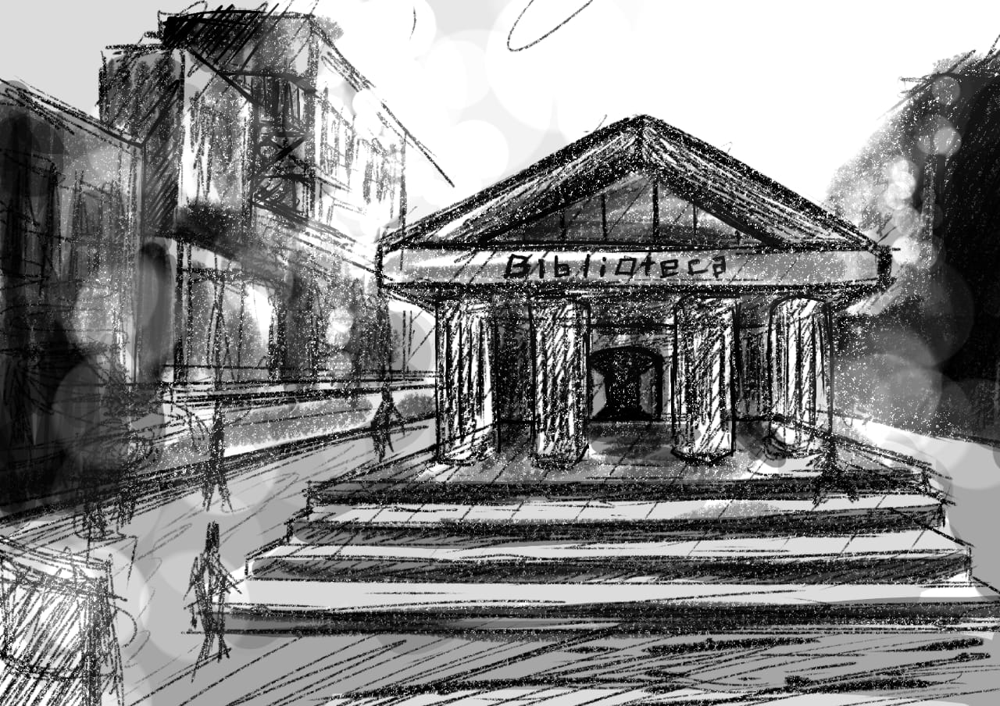

Narrativa sem título
por Pedro Bertasso
Capítulo I
Lá estava ele, em meio à rua, correndo às pressas, uma vez que se encontrava atrasado para chegar ao seu encontro no qual tinha sido avisado alguns dias antes, por meio de uma carta anônima dizendo ser urgente. Era péssimo com datas e eventos, perdia-se facilmente nelas e consequentemente se atrasava. Corria com uma voracidade nunca vista, estava desesperado, passava pelas ruas vazias e desertas, começara a ficar nublado e o céu, acinzentado. Sua gravata vermelha com listras verdes perdera parte de sua cor pela nebulosidade e ao mesmo tempo atingira o seu rosto levemente por ser de seda. As batidas de seu coração disparavam cada vez mais, estava pálido e ofegante, sentia-se gelado mais pelo nervosismo que pelo clima.
O tempo passava, o tique-taque do relógio em seu pulso demarcava a tensão naquele momento, as veias pulsavam e os olhos palpitavam, teve medo de ter espasmos mais fortes, lembrara dos seus treze anos quando fora se divertir em um bosque ao perseguir uma borboleta, assistindo ao seu doce bater de asas, voando de forma graciosa pelas árvores altas circundadas por gramas e arbustos, chegou próximo a um lago com a costa cheia de pedras de diversos tamanhos junto com um caminho de terra levando quem fosse a um pequeno bote de pesca e ao lado um curto deque com um outro bote, sempre o deixou confuso o porquê de um barco ficar na costa e outro no deque, mas nunca lhe importou a resposta, e no bote da costa a borboleta pousou no remo e ele foi ver mais de perto ela, passo por passo foi ele se aproximando dela toda preta e de repente um clarão no céu o assusta e lhe causa uma súbita convulsão. Sozinho, ele estava no chão tendo espasmos sem ninguém para ajudá-lo e no momento que retornou a si via seus pais agachados no chão de pedras, preocupados, e a borboleta no fundo se afastando.
Finalmente chegara ao seu encontro na biblioteca municipal no qual ficaria para ler, já que livros eram sua paixão não importava o gênero, fosse de suspense a romance e até ficção. O edifício da biblioteca era grotesco, na entrada era seguido por um lance de dez degraus até chegar na entrada com uma fileira de seis pilares e com apenas dois ou três passos, chegava-se na enorme porta de madeira por ser antiga a construção. O interior era indescritível, um mar de livros o rodeava por todos os cantos, de cima a baixo haviam livros de todos os gêneros, tamanhos e cores possíveis, imensuráveis prateleiras de aço, todas em ótimo estado tal como os livros, e por ser um estabelecimento relativamente antigo era esperado que estivesse mais desgastado, entretanto era justamente o contrário.
Impressionado, uma voz clama por sua presença no balcão, um semicírculo com base de madeira de carvalho e revestida por mármore em cada aresta lateral e topo dele, também havia um rodapé feito do mesmo material, onde eram registrados os empréstimos e entregas de livros. Quem o chamava era a secretária, Sra. Constance, - uma velhinha com aparência rabugenta, mas com personalidade cativante, não quis ser rude ao pensar por um instante que ela devia ser tão velha quanto os livros ali presentes e, dessa forma, evitou dizer ou agir como se pensasse isso - “Olá meu rapaz, Marcos Gomes, suponho.”, disse a senhora com suas bochechas flácidas fazendo movimentos notáveis, sendo o suficiente para que o jovem retomasse aquele pensamento anterior. “Sim. Sou eu, como sabe meu nome?”, responde de forma acanhada e intrigado, sentia-se um pouco deslocado e intimidado pela sua flácida e enrugada pele branca. Ela, sem dizer nada, entregou-lhe apenas uma tira de papel com a etiqueta de um livro. Estava escrito 582 D74v e, como conhecia a classificação de M. Dewey, não teve dificuldades em achar a estante certa. Subiu as escadas, na qual ficava no fundo do térreo do edifício sendo somente seguir em direção reta da porta até o fundo onde se encontrava, para o andar de cima que continha uma quantidade imensurável de livros, quem vê do andar de baixo consegue perceber apenas grades para evitar que alguém caia e aconteça um acidente e para os que olham de cima veem no centro de tudo o balcão de atendimento e lá fazia papel de ponto de referência e encruzilhada, pois haviam quatro caminhos-guia com noventa graus de distância cada uma e formavam um “X” em relação à porta principal e cada caminho levava à um assunto de acordo a classificação de Dewey, tendo no primeiro andar até as categorias quatrocentos e noventa e nove e no segundo andar da quinhentos até a novecentos e noventa e nove. Foi, livro por livro, procurando na categoria quinhentos destinada às ciências puras, calma e vagarosamente, perdia-se completamente do mundo em meio aos livros, amava-os, nem parecia que a poucos minutos estava ofegante e tenso, e, chegando na localização dada na folha, estava na área da botânica e o livro apresentava uma capa meio avermelhada, carmesim para ser mais exato. O título estava desgastado demais para ler qualquer letra, a única coisa que sabia era que o livro tinha a inicial “V” pela etiqueta e o nome do autor era um tanto quanto estranho, Hedic Donosec. Pensou ser de um país eslavo, mas irrelevante seu nome uma vez que estava lá para saber o que de tão especial tinha a biblioteca e, ainda mais, um livro para ser urgente. Antes de pegar o livro reparara que a luz estava fraca demais em relação às outras, tanto as mais distantes quanto as mais próximas das estantes ao lado. Acreditara ser apenas falha da luz, portanto pegara apenas o livro, entretanto nesse movimento um envelope caiu levemente até o chão, ele o pegou e abriu, lendo baixo com os lábios entreabertos as letras engarrafadas do papel ‘Sei que é detetive, Sr. Gomes e por isso eu lhe imploro que me ajude, meu desespero está tomando conta de mim e sinto que algo de ruim está por vir, estarei neste endereço abaixo. Encontre-me ás 19h de amanhã.’, no final da carta estava escrito o endereço ,’Rua Carmim, número 16’, junto com a inicial da pessoa que escreveu ‘C’ e uma notável marca d’água no canto inferior direito do papel, era circular e tinha algumas escrituras minúsculas junto com uma balança no meio, pensando que a pessoa praticasse direito. Após essas observações marcou o horário em sua agenda e retirou-se da biblioteca, agradecendo a senhora no balcão.
No dia seguinte, seguiu sua rotina com apenas uma exceção: não estava com nenhum caso em aberto. Aproveitou o dia até o horário marcado e, ao chegar no local, deparou-se com uma viela, escura e de certa forma demasiadamente escura, uma sombra o chamou, dando para ver apenas o cigarro aceso em sua boca. Foi andando até a pessoa pedindo para que se identificasse, mas de repente, uma mão grossa o apanha por trás e tapa sua boca com um pano. O detetive tentou lutar contra a criatura da mão grossa, mas não tinha força suficiente. Sua visão começava a ficar cada vez mais turva e embaçada e, juntamente a isso, ficava cada vez mais fraco ao tentar sair daquele grotesco ser que o agarrara até que chegou num ponto aonde a pessoa do cigarro sumira e não tinha mais qualquer tipo de noção do que acontecia, parando de se debater e se libertar. Desmaiara ali mesmo. Foi pego pelo grandalhão e posto no porta-malas de uma minivan preta, veículo o qual estava totalmente disfarçado no fim da viela sendo visível somente por conta dos faróis acesos mesmo estando falhos, e foi levado, após ser drogado, através das sombras, para o desconhecido. Um longe e desconhecido lugar fora de qualquer conhecimento que nosso detetive possa ter.